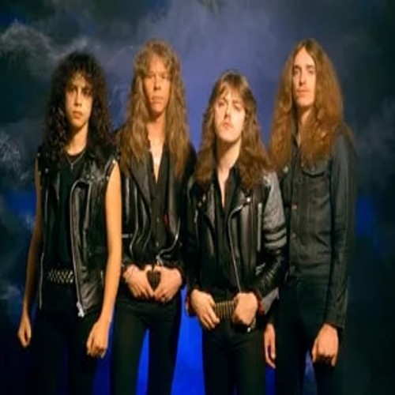

Metallica es un grupo estadounidense de thrash metal1 originado de Los Ángeles, pero con base en San Francisco desde febrero de 1983. Estos dos músicos fueron después sustituidos por el guitarrista Kirk Hammett y el bajista Cliff Burton respectivamente, Dave Mustaine fue despedido un año después de ingresar en la banda debido a su excesiva adicción al alcohol y su actitud violenta, siendo sustituido por Kirk Hammett . Es entonces, tras contactar con Cliff Burton que la banda se traslada a San Francisco.
Periodo de actividad: 1981-presente
Canción más popular: Nothing else matters
Se la dejamos a continuacion por si desea escucharla dandole al boton play:
En el recorrido podemos ver un escenario en el que estan exibidos todos los instrumentos que uso la banda a lo largo de su carrera